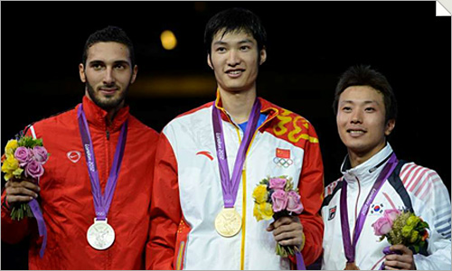
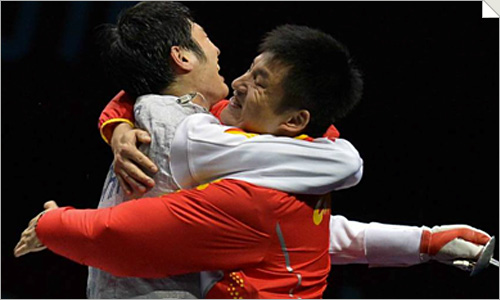

一劍天下驚：iTalkBB祝賀雷聲豪奪奧運男子花劍冠軍
（弗吉尼亞維也納7月13日）
百年歷史終改寫，兩代夢想今日圓！今天，中國男子花劍劍客終於站到了奧運會最高領獎台上。美國東部時間7月31日下午，中國男子花劍運動員雷聲一路過關斬將，喜獲該項目的金牌，成為第一位中國男子花劍奧運冠軍。中國男子花劍隊贊助商iTalkBB熱烈祝賀中國健兒亮劍倫敦，書寫歷史。
劍證歷史：破歐洲選手116年壟斷
倫敦奧運會的花劍項目可謂強手如雲，現在世界排名第九的雷聲幷非最被看好的選手。但他穩紮穩打一路輕鬆挑下了多位高手，1/4決賽中更是擊敗了本屆奧運會頭號種子，世界排名第一的意大利名將阿斯普羅蒙特。決賽階段，在遭遇爭議判罰的情況下，在被對手反超的情況下，雷聲頂住了壓力！他連得4分，以15-13戰勝了埃及劍客阿波爾卡西姆獲得冠軍！他拿到了這枚金牌，中國男子花劍的首枚奧運會金牌！從1896年首屆奧運會至本場比賽之前，歐洲人壟斷了該項目的金牌長達116年，雷聲則用金牌改寫了歷史，宣告了歐洲獨霸的日子一去不返，同時成為了亞洲首位獲得該項目金牌的劍客，是名符其實的亞洲之光。
從左至右依次為男子花劍個人亞軍埃及選手阿波爾卡西姆、冠軍中國選手雷聲、季軍韓國選手崔秉哲
比賽結束後，面對蜂擁而上的媒體，他又恢復了其超越年齡的淡定和從容，“我還是去想要去冷靜的打好每一劍。其實我沒有想太多結果，我一直在默默告訴自己，今天我一定是最好的，我一定能走到最遠。這股動力一直支撐我，無論領先落後都沒有鬆懈過。”他表示，今天的金牌，只是開始，對之後8月5日的花劍男子團體比賽也更有信心。
雷聲陣陣：3年實現花劍兩大夢想
雷聲之名，有萬鈞之氣勢，給人感覺是一位性格爽直、帶有些輕狂凌人之氣的劍客。可實際上，身高193，體型纖長的他外表卻頗似彬彬書生，性格也十分內斂，據熟悉他的人說“這讓他在比賽時更為冷靜機敏”。在本次奧運會之前，雷聲對於中國花劍隊便可謂已是戰功赫赫。他曾多次在擊劍世界盃中獲得名次，也於2010年和2011年兩次助力中國男子花劍隊問鼎世錦賽團體冠軍，成就了第一次的歷史突破。
但是，自1984年美國洛杉磯奧運會--中國女子花劍選手欒菊傑為中國代表團奪得歷史上第一枚擊劍金牌後，中國花劍再未在奧運會上獲得金牌。2000年2004年花劍男團兩度折戟，與金牌失之交臂。這個空白，讓每一個花劍隊員都憋足了一口氣。這也是為什麼，雷聲在圓夢倫敦之後，一改往日的儒雅內斂，摘下頭盔，癱倒在地，一聲怒吼響徹全場。他的教練，曾兩次獲得奧運會銀牌的王海濱，看到此情此景也分外觸動。因為雷聲，兩代花劍劍客的奧運夢想終於在今朝實現。
雷聲與教練王海濱相擁慶祝
一直致力於“為海外華人提供更美好生活”的iTalkBB新電信榮譽贊助中國男子花劍隊亮劍世界，榮耀華人。為慶祝健兒的優異表現，iTalkBB特別推出“豪禮賀金”優惠活動，即日起，前800名致電加入iTalkBB的用戶，將獲得家庭電話全球無限任打3個月免費，高清中文電視1年免費的超級優惠，大家趕快行動起來吧！
2012年夏天，iTalkBB新電信與全球華人一起，為健兒們吶喊加油！激勵一代人，情傳全世界。之後，更會舉辦奧運冠軍慶功見面會，讓廣大海外華人也有機會與奧運冠軍零距離接觸。
更多詳情，請登入www.iTalkBB.com 或撥打24小時服務熱線1-877-482-5522查詢。
關於iTalkBB：
iTalkBB新電信是享譽全美的優秀通訊品牌，是國際電訊行業的領導和先驅。其以頂級全球網絡和前沿技術為依託，以最具競爭力的價格為客戶提供高質、清晰的本地、國內及國際長途電話服務，以及高清中文電視直播、回播與點播服務。其電話業務能完全取代傳統家庭電話，並享受多重免費提供的附加功能如來電等待、三方通 話、來電顯示、呼叫轉移等。另有獨一無二的功能——中國大陸、台灣、香港、南韓當地號碼，當地親友只要撥打此號碼，就能接通到在美國的親友，而無需支付國際 長途費用 。iTalkBB的高清中文電視服務，自問世以來便受到了廣泛的好評和歡迎。超過五十個熱門頻道支持實時直播與48小時回看，海量最新電影電視劇綜藝節目免 費無限點播，讓用戶以最低價格盡享華語娛樂。iTalkBB新電信將不斷努力，與您共同成就更美好的生活。iTalkBB設有24小時中英文的客戶服務熱線: 1-877-482- 5522和官方網站www.iTalkBB.com，一年365天提供不間斷的服務與更多信息的查詢。